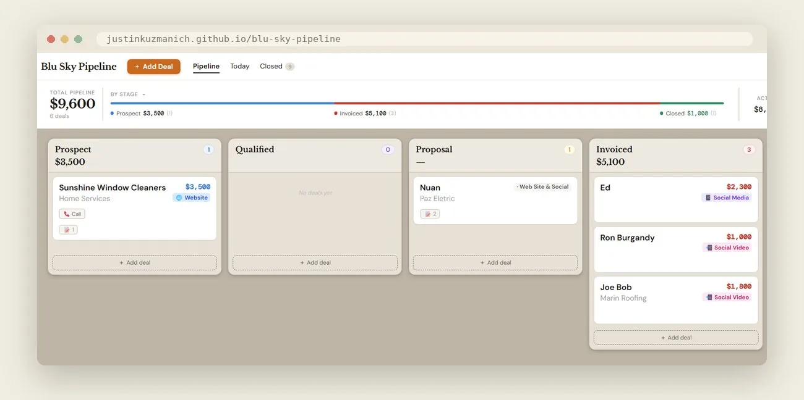
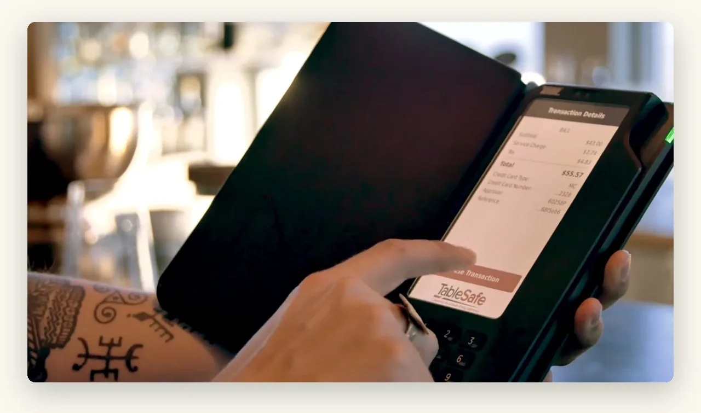
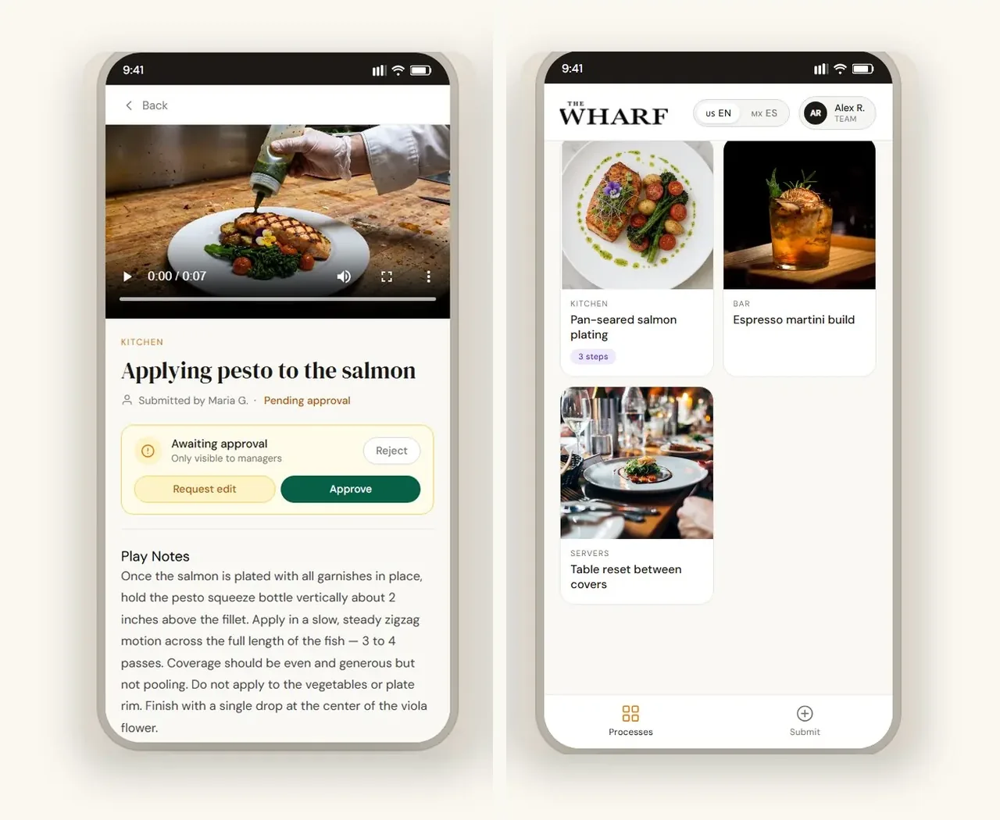
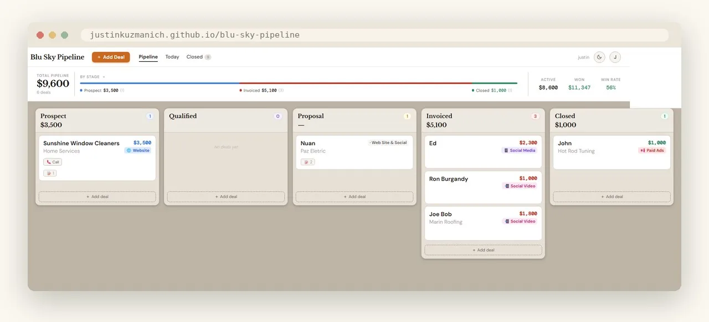
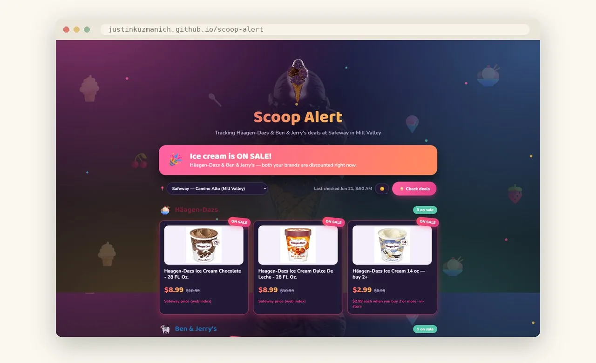
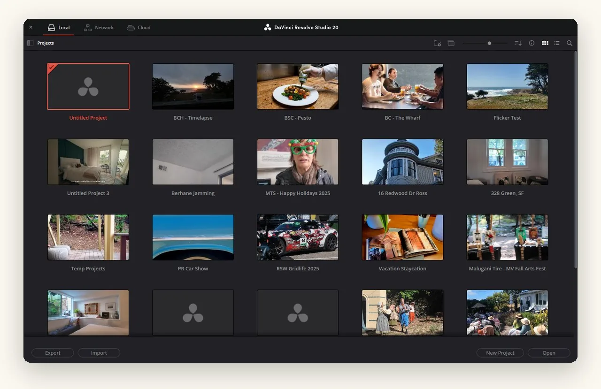
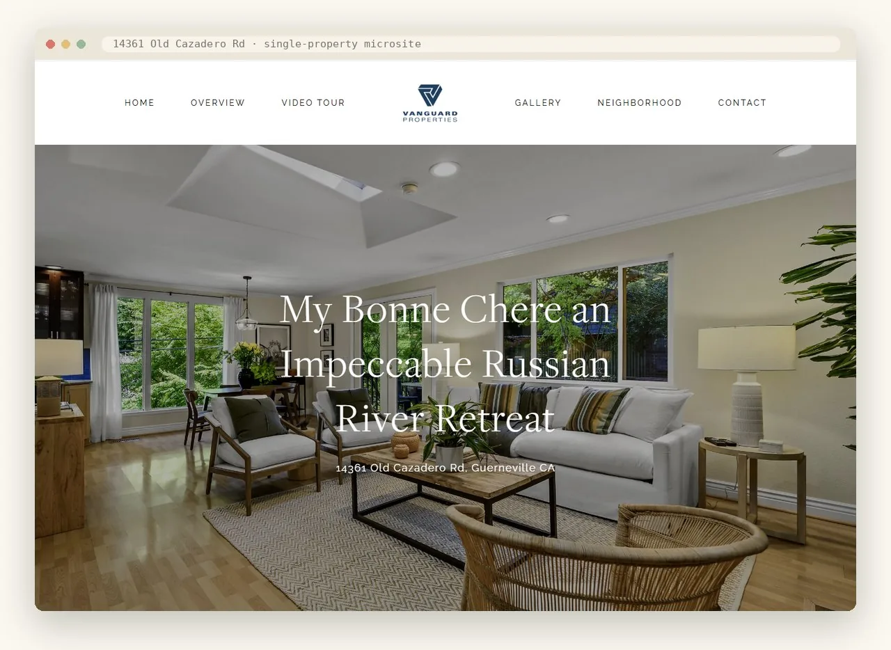

Practical tools for the friction in your business.
We pair real creativity with AI tools to design and build software that solves actual business workflows, for our own studio and our clients. Six of them, below.


CheckMate
Long before AI tools, paying at a restaurant table was pure friction: split checks, server handoffs, slow card processing.
Justin co-founded the venture that fixed it with inventor Fleming Trane: a patented hardware-and-software pay-at-the-table device (US 7,370,794 B2), acquired into TableSafe, Inc. in 2012 and now serving 170+ restaurant groups. Workflow first, then the technology. The same approach behind every tool below.
- Hardware + software
- US Patent 7,370,794 B2
- Acquired · TableSafe 2012

TableOps
When a restaurant trains new staff, the know-how lives in a few people's heads. New hires sink or swim, and good practices drift.
Front-line staff capture a “play”, a short video plus step notes, and a manager approves it before it goes live. Organized by station, bilingual EN/ES, so a new hire learns the house standard from the people who set it. In demo with a long-standing client.
- Single-file HTML
- Bilingual EN/ES
- Approval workflow

Blu Sky Pipeline
Leads, deals, and invoices lived in email, sticky notes, and Square. Nothing talked to anything, and things slipped.
A kanban board for the whole studio: drag every deal from Prospect to Closed, tag it by service, and watch pipeline value and win rate update live. Square invoicing is wired in, so billing happens where the work already lives.
- React 18
- Vite
- Supabase
- Square API

Scoop Alert
Good ice cream isn't cheap and prices move. You never quite know when your spot is actually worth the trip.
Checks the Mill Valley Safeway every day and emails you the moment Häagen-Dazs or Ben & Jerry's drops to a member price. A small, fun one, and proof the same scrape-and-alert pattern works for anything worth watching.
- Web scraping
- Email alerts
- Daily checks

AI B-Roll Editor
Cutting hours of property b-roll into a tight, musical 90 seconds is slow, repetitive work, and the least creative part of the edit.
An AI-assisted editor that picks and assembles the strongest b-roll into a rough cut, then exports FCPXML straight into DaVinci Resolve, so the editor finishes the piece instead of starting from zero.
- DaVinci Resolve
- FCPXML
- AI vision

Listing Website Builder
Every luxury listing deserves its own fast, beautiful website, but hand-building one per property, for every agent, doesn't scale.
Turns a Blu Sky listing film and photo set into a polished single-property microsite: hero video, lightbox gallery, the details, mobile-first, in a fraction of the usual time.
- HTML / CSS
- Netlify
- Templating